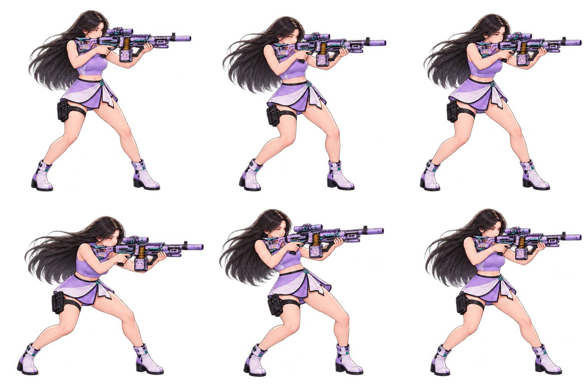
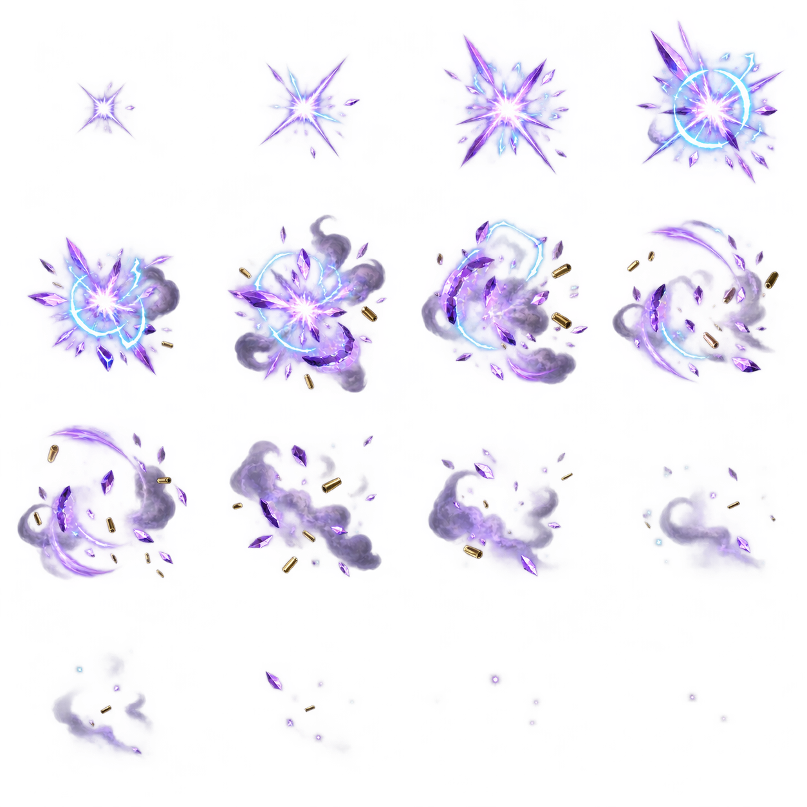

승인 원화 2026.09.21
SS · 중거리 사수
비키니 조은
여섯 발의 보랏빛 사선.
반동 끝에 선명해지는 탄착.
승인 원화를 그대로 보존했습니다. 전투 SD에는 활동용 상의와 랩 스커트를 적용하고, 사격·반동·복귀를 여섯 개 동작으로 제작했습니다.
원화 승인이름 확정SS 등급 확정
라벤더 리코셰 재생하기 ↗전투 SD와 새 스킬 연출 검수본
BATTLE SPRITE
앞을 겨누는 조준 자세

LAVENDER 경기관총어깨에서 총구까지
어깨에서 총구까지
한 방향으로.
개머리판은 어깨에, 왼손은 총열덮개 아래에. 사격할 때도 같은 방향으로 반동과 복귀가 이어집니다.
6사격 동작 프레임16탄착 이펙트 프레임
SIGNATURE SKILL
라벤더 리코셰
적 전열 한 명을 향해 빠르게 6연사합니다. 마지막 탄이 라벤더 빛으로 파열하며 집중 사격 피해를 적용합니다.
재생 대기
전투 시연 준비 중…
빠르게, 한 행동 안에서
별도 준비 턴이나 적의 체력 조건 없이 발사합니다. 앞선 탄이 빗나가도 후속탄을 쏩니다.
연출과 피해를 정확하게
피해 배율 420%. 여섯 발의 궤적이 한 번의 서버 확정 피해를 표현합니다. 방어·보호막·회피와 기존 피해 상한을 적용합니다.
SS 등급 전용 스킬
비용 25 · 재사용 5턴. 방어 무시·기절·추가 행동은 없습니다. CMS에서 피해 배율과 비용, 재사용 대기를 조정할 수 있습니다.
연속 프레임 원본 보기

